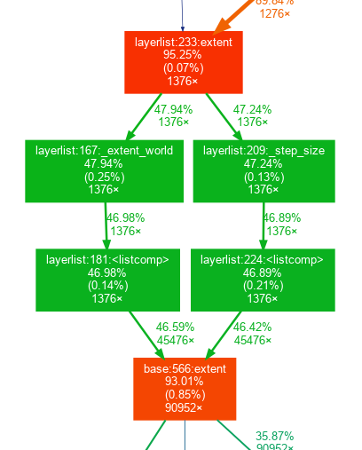

Profiling¶
In contrast to performance tracing, profiling does not provide information about the timing of events, but instead provides combined information about the total time of execution of each function. It also produces a call graph that simplifies understanding the call relationship between functions.

The basic tool for profile in Python is the built-in module cProfile.
To profile an entire script, use the call:
python -m cProfile path_to_script.py
The output will be a table similar to this one:
2334264 function calls (2267576 primitive calls) in 2.242 seconds
Ordered by: internal time
ncalls tottime percall cumtime percall filename:lineno(function)
21241 0.252 0.000 0.252 0.000 {method 'reduce' of 'numpy.ufunc' objects}
80547/57578 0.080 0.000 0.765 0.000 {built-in method numpy.core._multiarray_umath.implement_array_function}
1048 0.060 0.000 0.060 0.000 {built-in method marshal.loads}
62683 0.052 0.000 0.052 0.000 {built-in method numpy.array}
122/117 0.042 0.000 0.047 0.000 {built-in method _imp.create_dynamic}
5152 0.042 0.000 0.053 0.000 stride_tricks.py:114(_broadcast_to)
5102 0.037 0.000 0.048 0.000 decomp_qr.py:11(safecall)
2551 0.031 0.000 0.386 0.000 transform_utils.py:153(decompose_linear_matrix)
2651 0.029 0.000 0.067 0.000 transforms.py:342(__call__)
2172/2108 0.029 0.000 0.087 0.000 {built-in method builtins.__build_class__}
18283 0.027 0.000 0.278 0.000 fromnumeric.py:70(_wrapreduction)
...
The format of this table is documented in the Python docs
here.
Because the output for complex programs such as napari can be very long,
we suggest piping output to less, or saving it to a file,
which can be investigated later. To save the output to file use the -o option:
python -m cProfile -o result.pstat path_to_script.py
Once the file is saved, you can investigate using free tools. Some options include:
The Stat object.
You can parse the profile output using the
Statsobject from thepstatsbuilt-in library. For example:from pstats import Stats stat = Stats("path/to/result.pstat") stat.sort_stats("tottime").print_stats(10)
You can find more documentation about the Stats object in the Python documentation here.
Snakeviz.
Snakeviz is a third party library designed to visualize profiling output interactively. You can install it with pip like any other Python library using
pip install snakeviz. This will provide thesnakevizcommand, which you can call to create an in-browser visualization of your profiling data. Use the command:snakeviz path/to/result.pstat
This should cause a new page to open in your browser with your profiling information. You can read more about how to interpret this visualization on the snakeviz homepage.
gprof2dot
You can visualize the call graph with
graphviz, a third party graph visualization library. You can install graphviz with system package managers:Ubuntu:
sudo apt install graphvizMacOS with brew:
brew install graphvizWindows with choco
choco install graphviz
You can then use
gprof2dot, a Python library, to convert the.pstatstatistics to a.dotgraph file and use graphviz:$ python -m gprof2dot -f pstats -n 5 result.pstat -o result.dot $ dot -Tpng -o result.png result.dotIf your shell supports piping, this can all be combined into one command:
$ python -m gprof2dot -f pstats -n 5 result.pstat -o | dot -Tpng -o result.png
Some IDEs have built in profiling visualization tools. For example, PyCharm Professional, which is free for academics and open source maintainers, allows viewing
.pstatfiles using Tools > Open CProfile snapshot.
cProfile also allows profiling only specific parts of the code.
You can restrict profiling to particular code sections using
cProfile.Profile() as a context manager:
import cProfile
with cProfile.Profile() as pr:
code_for_profile()
pr.dump_stats("result.pstat")
The resulting profile can then be visualized using the above methods.
In some situations, you might want to profile code that needs some preliminary steps to be performed in the viewer, which you don’t want to measure. In this situation, you can create a button to trigger profiling:
def testing_fun():
with cProfile.Profile() as pr:
code_for_profile()
pr.dump_stats("camera_layers.pstat")
testing_btn = QPushButton("Profile")
testing_btn.clicked.connect(testing_fun)
viewer.window.add_dock_widget(testing_btn)
In addition to cProfile, third-party profilers are available in Python:
yappiwith support for multithreadingvmprof
Both can be installed with pip.